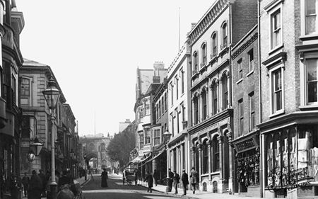
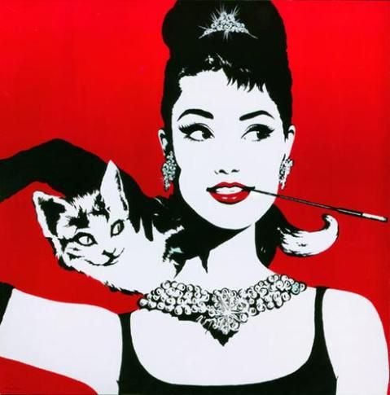

Este nuevo movimiento tuvo muchas influencias dentro del expresionismo abstracto. Pero fue en la mitad del siglo XX cuando se fraguó, primero en Gran Bretaña a mediados de los 50 y posteriormente en los 60 en los Estados Unidos.
La idea que había detrás de este movimiento era similar a la que puedes encontrar en las vanguardias de los años 20. Buscaban escapar de una visión elitista del arte, una visión que no hacía más que mermar su capacidad creativa y el modo en el que querían reproducir el mundo.
Realmente, era una crítica o una contestación a las élites burguesas culturales de la época. Eso sí, la forma de hacerlo, a diferencia de las vanguardias, sería asimilando buena parte de las figuras pop del momento. Ahora lo que se ensalza deja de ser lo trágico o lo absoluto. Ya no se buscan problemas directamente metafísicos o abstractos. Tampoco se recurre ya a figuras mitológicas ni a grandes personajes históricos. Ahora se habla sobre actores, sobre famosos, sobre productos típicos, sobre lo cotidiano. Es una forma de sacar el arte de determinadas esferas culturales y llevarlo a la vida diaria.


Sus caracteristicas
Influencia en la cultura de masas. Los temas buscan escapar de la grandilocuencia o del tremendismo de otras épocas. Ahora la intención principal que se tiene es la de coger referencias culturales comunes que todo el mundo pueda percibir y entender.
Superficialidad. Los objetos o los temas son retratados con cierta superficialidad. Pese a que luego esas mismas obras puedan tener un sinfín de lecturas académicas, en un principio se busca algo mucho más simple y sencillo, visualmente hablando.
Visión irónica. De forma casi natural, a través de esa tendencia hacia la superficialidad y a ensalzar la cultura de masas, se produce ese cambio con una visión un tanto irónica. Los artistas de este movimiento no pierden su capacidad crítica, todo lo contrario. Sin embargo, su obra en sí no te parecerá necesariamente planteada como una crítica.
Un arte más plano. No se busca tanto reproducir piezas complejas o técnicamente significativas. El giro se produce en el hecho de que el arte deja de imitar la vida y es la vida la que pasa a imitar el arte. Es decir: este nuevo movimiento trata de predecir o de condicionar la propia vida de masas, creando cultura, también, de masas.